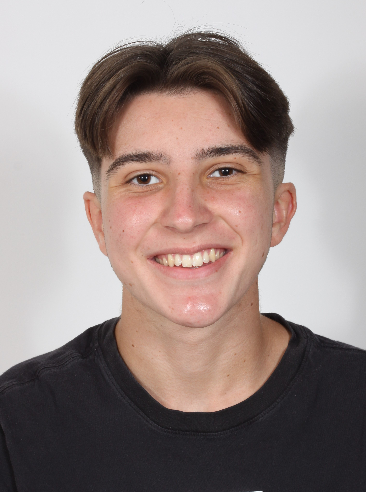

CV : Sullyvan Buckwell - Lycéen à Arcachon
Lycéen en filière générale
Spécialités : SES MATHS NSI
Envisage études de commerce
Marketing, Communication, Economie
Sullyvan LASSAGNE--BUCKWELL
06 00 00 00 00
sully.bck@gmail.comGujan-Mestras, Aquitaine, 33
16 ans, conduite accompagnée
En recherche d'un job pour financer mes études
Expériences
Casino Partouche d'Arcachon :- animation des réseaux sociaux de l'entreprise
- montage vidéo Youtube/Insta/Facebook pour Partouche
- nettoyage plage et forêt dans le cadre de l'opération Solivert, 2019/2021
- organisation/animation kermesse de pâques, 2019
- hardware, montage/réparation d'ordinateurs
- conseil clientèle
- résolution de beaucoup d'erreurs logicielles
- Octobre 2021, une semaine
- Étés 2019, 2020, 2021 : une semaine
Formation
2020-xxxx : Lycée Grand-Air, Arcachon Diplôme National du Brevet - mention très bien 2016-2020 : Collège Chante-Cigale, Gujan Certification de passage au collège 2014-2016 : École primaire Pasteur, Gujan 2011-2016 : Écoles primaire du Delta, le Teich 2008-2011 : École maternelle du Delta, le Teich
Compétences
Maîtrise autodidacte de plusieurs logiciels
- Premiere Pro, montage vidéo
- Photoshop, retouche photo
- Word, édition de texte
- Powerpoint, présentations
- Excel, tableaux
- FL Studio/Audacity, mixage audio
- etc...
Bonnes notions dans différents languages :
- Anglais
- Espagnol
- Python
- HTML/CSS
- Java
Atouts
★★★★★ - rigueur ★★★★★ - organisation ★★★★☆ - bonne humeur ★★★★☆ - curiosité ★★★★☆ - polyvalence